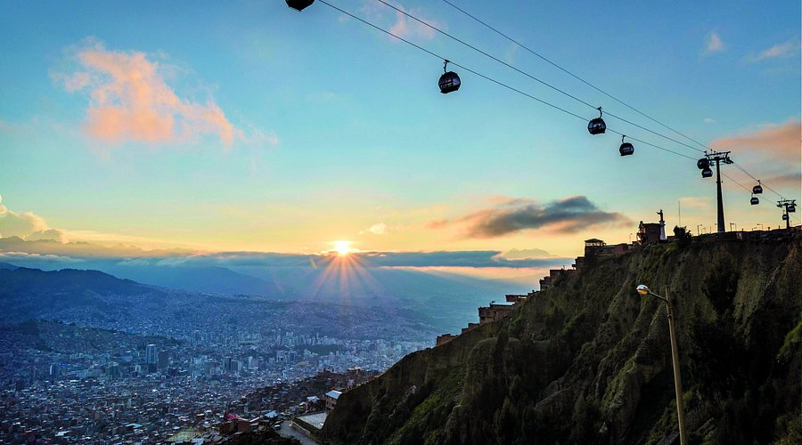

Decides recorrer la ciudad en los telefericos, donde recorres toda la ciudad desde las alturas, te asombras por el largo trayecto que recorres en cuestion de horas, nunca creiste que eso era posible. Pasaron las horas y ya oscurecio, pero ya sabias tu proximo lugar donde querias ir. Era le lago titicaca, pero no sabias si salir esa misma noche por no conocer un buen lugar donde quedarte o buscar un alojamiento para descansar tranquilo del largo dia que tubiste. ¿Que haras?